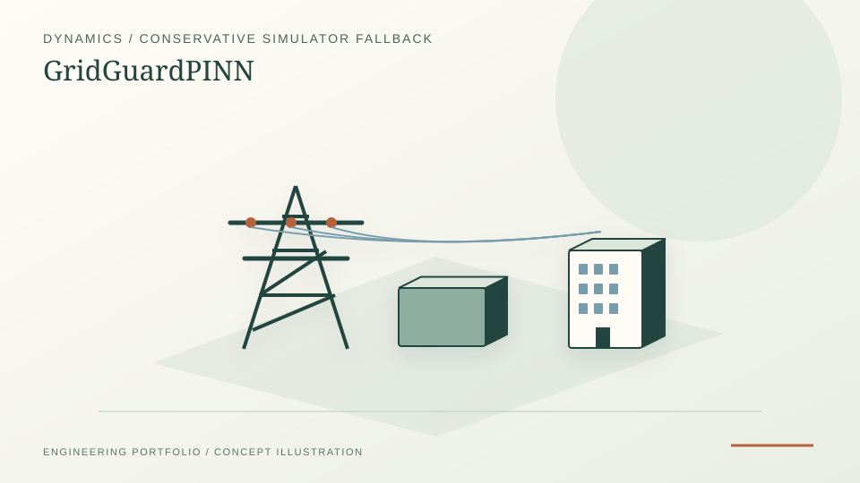

Reproducible SMIB and IEEE-14 transient-simulation experiments with held-out case protocols.
Physics-informed ML · ANDES · power-system dynamics · research software
GridGuardPINN — Trust-aware power-system surrogates
A reproducible research demonstrator that asks when a physics-informed surrogate should be used for transient simulation and when the workflow must return to the reference simulator. This project demonstrates my ability to evaluate a model's reliability separately from its accuracy, construct conservative fallback logic, and report where the learned approximation breaks down.
PyTorchANDESPythonSciPyCI

PROJECT REFERENCE / GRIDGUARDPINNConservative routing to the ANDES reference solver when the surrogate cannot be trusted; unseen fault locations rejected.
Synthetic IEEE-14 randomized routing benchmark: 1.57–1.95× speedup on defined mixed workload; not a safety guarantee.
Work and evidence
- Method: SMIB swing-equation experiments and an ANDES IEEE-14 multi-machine case, trained/calibration/held-out splits, physics-residual and parameter-space checks.
- Trust routing: the deterministic router refuses unseen fault-bus locations by default and sends unsupported cases to ANDES; the surrogate is not its own safety authority.
- Reported result: a pre-registered randomized comparison found 1.57–1.95× fully routed speedup over ANDES-only on the fixed 50% in-envelope / 50% out-of-distribution benchmark across three seeds.
- Reproducibility: released checkpoints, case-level ledgers, figures, dependency snapshot, SHA-256 manifest, test workflows and a technical working paper.
Method and judgment
What the experiment actually establishes
- Freeze training, validation and test cases before evaluating each successor model; calibrate acceptance thresholds on validation data rather than the reported holdout.
- Evaluate surrogate accuracy separately from the routing decision. Residual-only acceptance failed on unseen fault locations even where the network-aware approach improved error for two of three seeds.
- Time a routed workload that includes real ANDES fallbacks, rather than reporting neural-network inference speed alone.
- Retain adverse results, including historically observed false acceptances and an independent subsynchronous-oscillation extension with partially unresolved modal comparisons.
Scope and evidence boundary
Limits that matter.
This is research software, not certified grid-control, a protection system or a peer-reviewed publication. The reported speedup is specific to the fixed IEEE-14 workload and CI environment; it excludes training and does not demonstrate performance on other grids. SSR benchmark signals are synthetic, coupled-fault damping is not independently validated, and independent numerical review of that extension remains pending.
Demonstrated judgment: This project demonstrates my ability to evaluate a model's reliability separately from its accuracy, construct conservative fallback logic, and report where the learned approximation breaks down.
Primary evidence